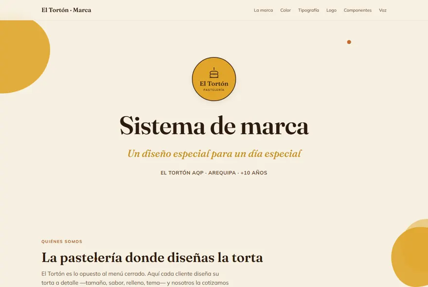
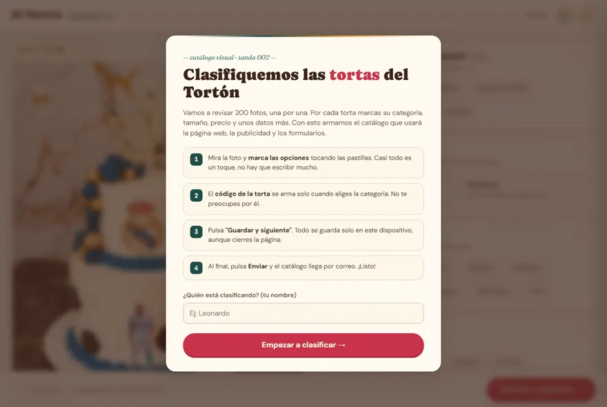
Trabajos · 2026
Cada una salió del mismo proceso: manual de marca, logo en todas sus versiones, aplicaciones y — cuando el proyecto lo pedía — su página web publicada. Pastelería, inmobiliaria, empanadas, ropa, dron y equipos industriales.


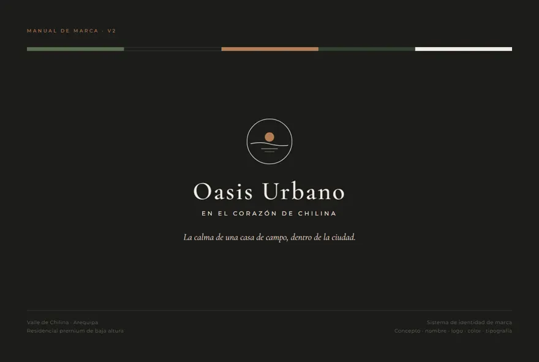
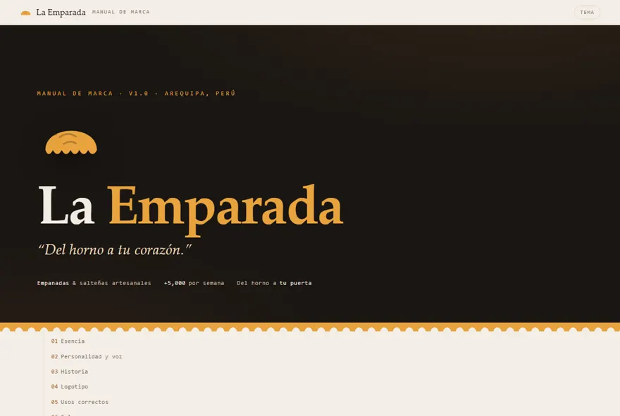
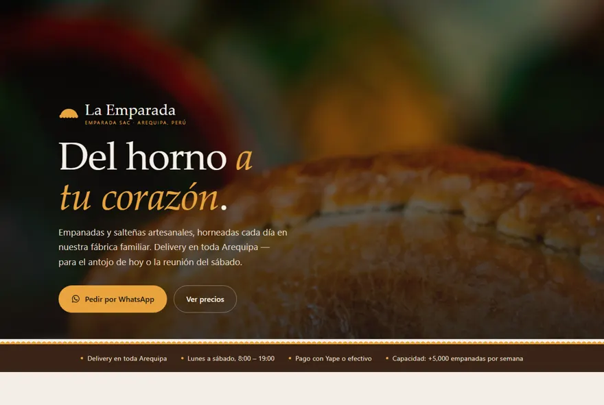
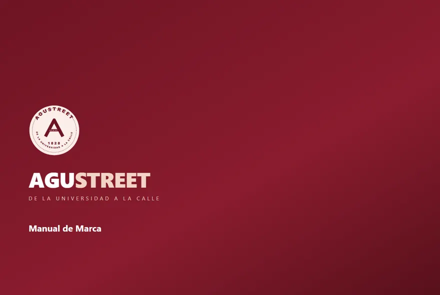
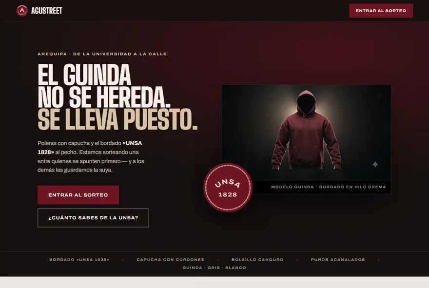
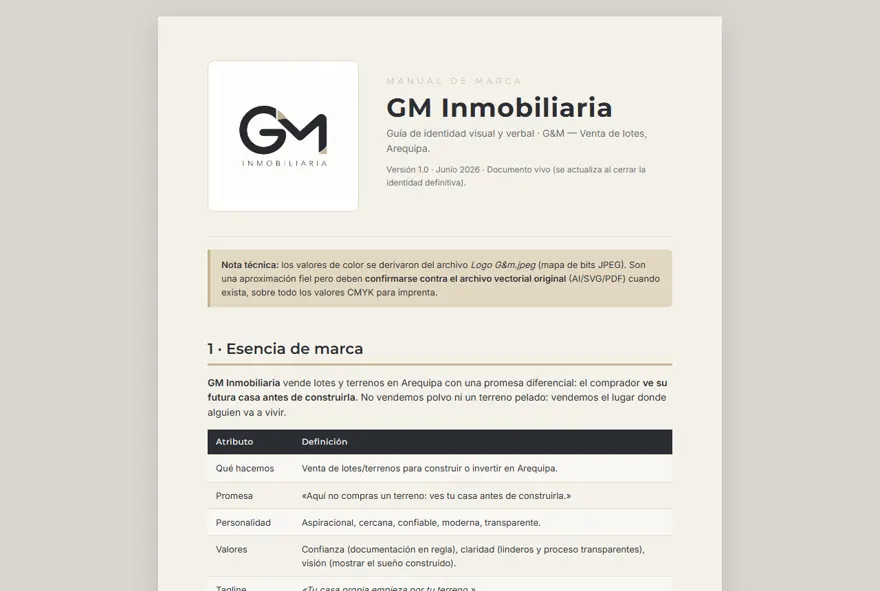
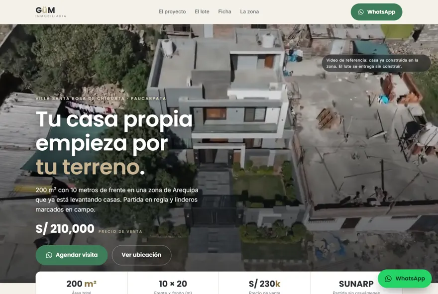
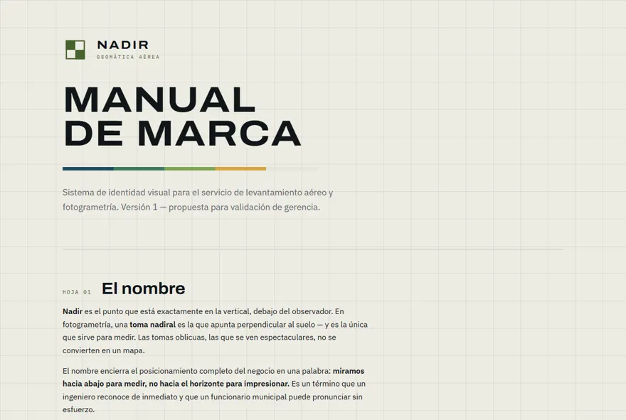
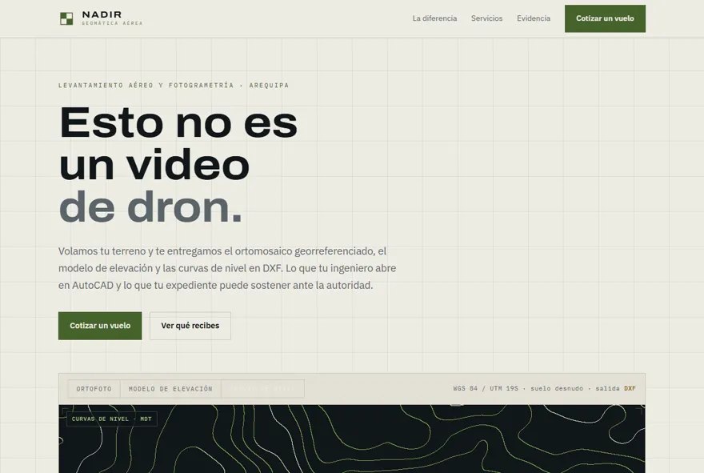
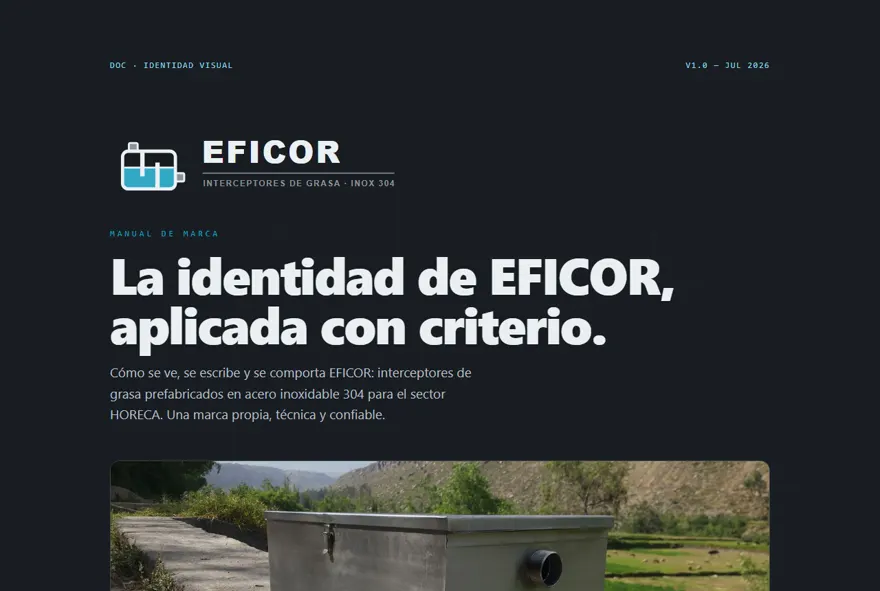
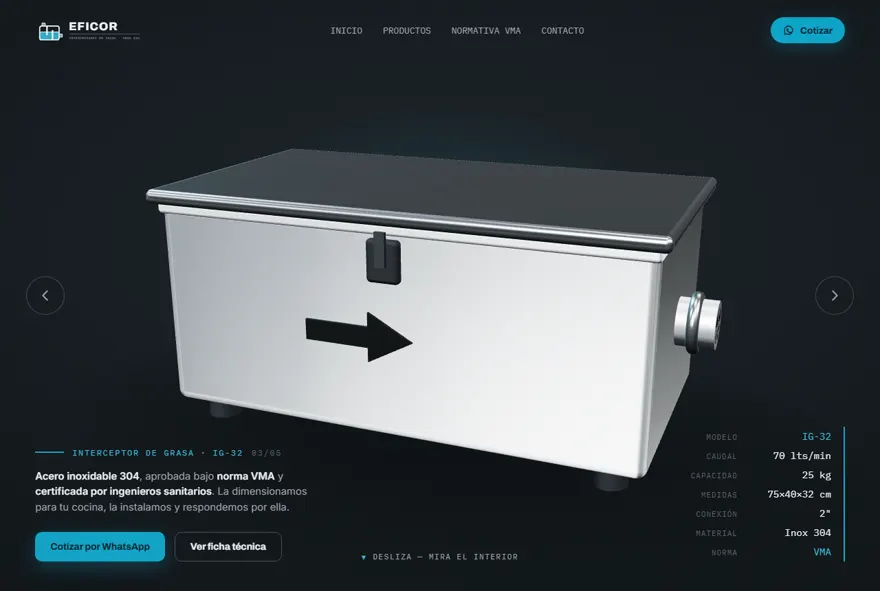
Mismo proceso, mismo nivel de detalle, en una semana. Escríbeme y te digo el precio de promoción y la fecha de entrega.
Quiero mi marca completa